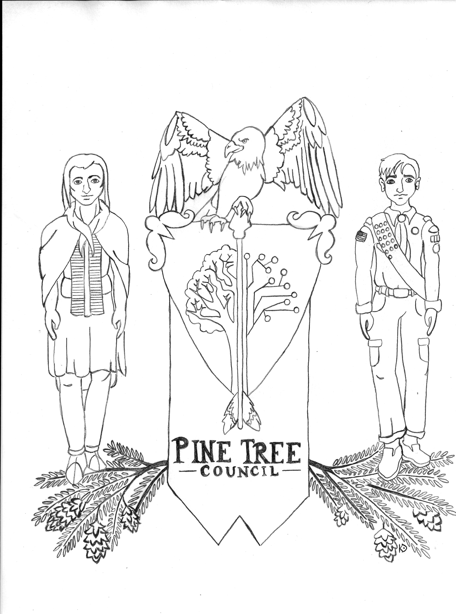
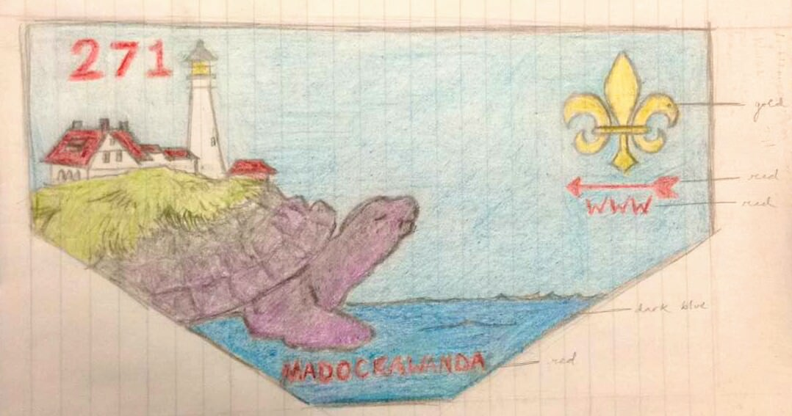
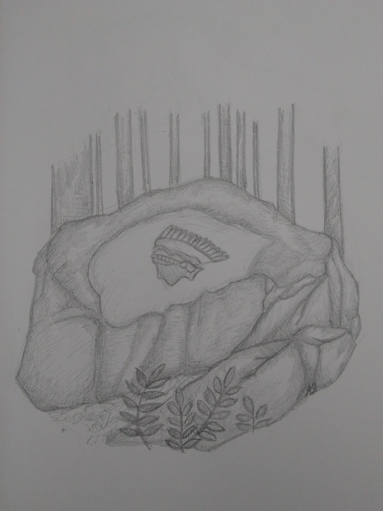

"Fear."
我们害怕我们所不知道的东西。
Lo que no entendemos nos asusta.
.نحن نخاف من الأشياء التي لا نفهمها
Мы боимся того, что мы не понимаем.
Nous avons peur de ce que nous ne comprenons pas.
We're afraid of what we don't understand.
After working with native speakers to translate the phrase "we're afraid of what we don't understand," I chose several different translations to display the message and illustrate the point.
My Personal Website.
After teaching myself the basics of Git and Github, I figured that I needed a place of my own on the Internet. I created this website from scratch and taught myself the basics of web development using resources on the Internet. For more information about what steps I took and what I would recommend, send me an email! I'd be happy to help.
Designs for Pine Tree Council.
I have completed various requests for others, but my most notable commissions were for Pine Tree Council.
  My Writings.
I enjoy writing and often write opinion essays about topics that interest me.
"Nights Without Stars" - This is a very personal essay about mental illness and the journey one takes while in recovery. It was inspired by my own experiences.
"The Inherent Polarization of the Internet" - This is a thinkpiece that I researched and wrote about in response to the growing conversation about politics on social media in 2016. It analyzes human behavior and uses psychology to explain how social media caters to the basic needs.